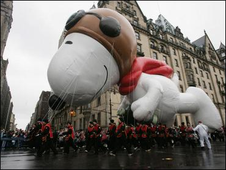

A sagittarian is born between the end of October and through November. Therefore, I like thanksgiving. I hope Woody does too
Sagittarians can be moody and absent minded. Some positive qualities include:
| fall | winter | spring | summer |
| content | depressed | excited | sweaty |